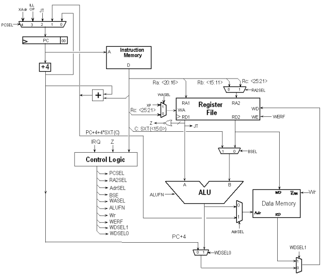

Problem 4.
Flaky Beta's, Inc. has an interesting business plan: they
buy -- very cheaply -- Beta processors manufactured by other companies
with slight defects and market them as implementing "variants" of the
Beta Instruction Set Architecture. FBI's plan is simply to change the
documentation of the instructions affected by the manufacturing flaws
in each machine, presuming that its customers can live with the
revised machine behavior.
The FB1 and FB2 are based on a non-pipelined Beta. They perform
exactly as a fully functional non- pipelined Beta (see diagrams at the
end of the quiz), except for the following flaws:
The FB1 has the select input to the ASEL mux stuck at 0, causing the register file to always be selected
as the A (left) input to the ALU.
The FB2 has the select input to the RA2SEL mux stuck at 0, causing
the Rb field of the instruction to always be selected as the RA2
(right) address input to the register file.
Note that, aside from the above flaws, the defective processors
behave identically to their fully-functional counterparts; control
signals, for example, are generated as for a working Beta processor.
FBI tests both the FB1 and FB2 on six Beta instructions: LDR, ST,
SUBC, BNE, LD and JMP. They find that each of the flaws affects only
one of the six instructions.
-
Which Beta instructions does the FB1 flaw affect? Which Beta
instructions are affected by FB2 flaw?

FB1 flaw: ASEL is nonzero only when executing the LDR instruction.
FB2 flaw: RA2SEL is nonzero only when executing the ST instruction.
-
Of course many programs use all the instructions in the Beta ISA,
so clients need to know if it is possible to rewrite their programs so
that they perform the same computation whether they run on an unflawed
Beta or an FBI processor. It's okay if the rewritten program takes a
different number of instructions than the original. When answering
the questions below, assume that rewritten programs still fit in the
available memory.
Is it possible to rewrite an arbitrary program so that it will
perform correctly on both an unflawed Beta and an FB1?
Yes. We've seen several ways of using a sequence of operations to
load a 32-bit constant into a register. For example:
.macro LDR(label,RX) {
BR(.+8,RX) | load address of following word into RX
LONG(label) | address of constant to be loaded
LD(RX,0,RX) | load address into register
LD(RX,0,RX) | load constant into register
}
-
Is it possible to rewrite an arbitrary program so that it will
perform correctly on both an unflawed Beta and an FB2?
Yes, although it's a bit tricky. You have to rewrite the program
so that all stores into memory have the form ST(R0,0,Rx), i.e.,
where Rx contains the address of the memory location to be written
and R0 contains the write data. In an unflawed Beta, the
RA2SEL mux would select the Rc field of the ST (R0 = 0b00000). In
an FB2, the hardware selects the Rb field instead, but if the
literal field is zero, then the Rb field is also 0. In either case
the contents of R0 are read from the register file and sent to
the memory.
Problem 5.
A 6.004 student, Pete Coshaver, has suggested the following modified
Beta design to minimize the critical path in his unpipelined
implementation.

-
Briefly describe the differences between the modified Beta shown
above and the Beta described in lecture.
1) The ASEL mux has moved from the A-input to the ALU into the
address path for main memory.
2) The 3-input WDSEL mux has been split into two cascaded
2-input muxes.
-
Which instructions have their critical path reduced
as a result of Pete's modifications?
The critical path for the LDR instruction is reduced since the
address no longer has to pass through the ALU before being sent
to main memory.
Assuming that tPD of a 2-input mux is smaller than tPD of a
3-input mux, the critical path for the LD instruction would also
be reduced.
-
On a given instruction Pete's control logic generates the
following control signals. What is the most likely opcode of
instruction being executed?
PCSEL 0
RA2SEL -
BSEL 1
ALUFN +
Wr 0
WERF 1
WASEL 0
AdrSEL 0
WDSEL1 1
WDSEL0 -
The operation performed is Reg[Rc] = Mem[Reg[Ra] + sxt(literal)] which
is the specification for the LD instruction. The key was noticing that
WDSEL1 = 1, selecting the output of main memory as the source of data
to be written into the register file.
-
What impact does Pete's redesign of the write-data-select
multiplexer (controlled by the WDSEL0 and WDSEL1 control lines) have
on the original Beta design?
- Pete's old Beta control ROM will not work with his modified Beta design
- It requires the BOOL unit of the ALU to be redesigned.
- It is most likely slower than the 3-input multiplexer used in the original Beta.
- It has no impact; it is functionally identical to the original design.
- Some standard Beta instructions can no longer be implemented with Pete's changes.
d. Surprisingly it has no impact since none of the control signal settings has
to change (even the original WDSEL encoding still works!).
-
What is the most appropriate setting of the WDSEL0 and WDSEL1
control lines when executing a BEQ instruction?
WDSEL0 = 0 and WDSEL1 = 0, selecting the output of the PC+4 as the data
to be written into the register file.
-
Pete would like to connect the ASEL signal of his old Beta
design to the AdrSEL signal in his new design. For what Beta
instruction type is it necessary for Pete to change the contents of
his control ROM before his modified Beta will behave identical to the
original version?
No modifications are necessary. ASEL = 0 except when executing the
LDR instruction, just like the original Beta.
-
Pete was also able to reduce the size of his control logic by
merging the functions of two signals into a single output signal. What
two signals, from the list given below, could he have merged?
a) WDSEL0 and WDSEL1
b) WDSEL0 and WERF
c) AdrSEL and WASEL
d) BSEL and RA2SEL
e) AdrSEL and WR
A look at the control logic chart for the Beta reveals that BSEL and
RA2SEL are the same if we choose appropriate values for the "don't care"
entries for RA2SEL.
-
The minimum clock period of Pete's unpipelined Beta
implementation is determined by the propagation delays of the data
path elements and the amount of time it takes for the control signals
to become valid. Which select signal(s) should become
valid first in order to ensure the smallest possible clock period?
As in the original Beta, RA2SEL should become valid first so that
the register file can get started on fetching register values. The
other control signals control logic that operates after the register
reads are complete.
Problem 6.
Consider the following potential additions to the Beta Instruction set:
// Swap register contents with memory location
MSWP (Ra, literal, Rc)
PC <- PC + 4
EA <- Reg[Ra] + SEXT(literal)
tmp <- Mem[EA]
Mem[EA] <- Reg[Rc]
Reg[Rc] <- tmp
// Move if zero
MVZ (Ra, Rb, Rc)
PC <- PC + 4
if Reg[Ra] = 0 then Reg[Rc] <- Reg[Rb]
// Move constant if zero
MVZC (Ra, literal, Rc)
PC <- PC + 4
if Reg[Ra] = 0 then Reg[Rc] <- SEXT(literal)
-
Specify the control signals configurations needed to execute these
instructions on an unpipelined Beta.
MSWP MVZ MVZC
ALUFN "+" "B" "B"
WERF 1 Z?1:0 Z?1:0
BSEL 1 0 1
WDSEL 2 1 1
WR 1 0 0
RA2SEL 1 0 -
PCSEL 0 0 0
ASEL 0 - -
WASEL 0 0 0
-
Explain why the following instructions cannot be added to our Beta
instruction set without further modifications:
// Push Rc onto stack pointed to by Ra
PUSH(Rc, 4, Ra)
PC <- PC + 4
Mem[Reg[Ra]] <- Reg[Rc]
Reg[Ra] <- Reg[Ra] + 4
// Store indexed (base + index register)
STX(Ra, Rb, Rc)
PC <- PC + 4
Mem[Reg[Ra] + Reg[Rb]] <- Reg[Rc]
To implement PUSH, the ALU would have to produce two values: Reg[Ra]
to be used as the memory address and Reg[Ra]+4 to be written into the
register file.
To implement STX, the Beta has to read three registers, but it
only has two read ports on the register file.


 indicates problems that have been selected for discussion
in section, time permitting.
indicates problems that have been selected for discussion
in section, time permitting.